D·I·C·T·O — Dodecahedron, Icosahedron, Cube, Tetrahedron, Octahedron
DICTO
Geometric sculptor in Osaka using recycled PET
Modular systems: B1NR / DICTOspheres
Three apps, one geometry
KALEIDOHEDRA Moves the landscape: shear and slide whole lattices, every piece moving with them RHOMBIVERSE The landscape: space-filling lattices from 1D to 6D POLYHEDRAVERSE The portrait gallery: every shape, one at a time, up close New here? Try RHOMBIS, the 3D puzzle from RhombiversePapers
Short papers by DICTO, with the checks behind every claim.
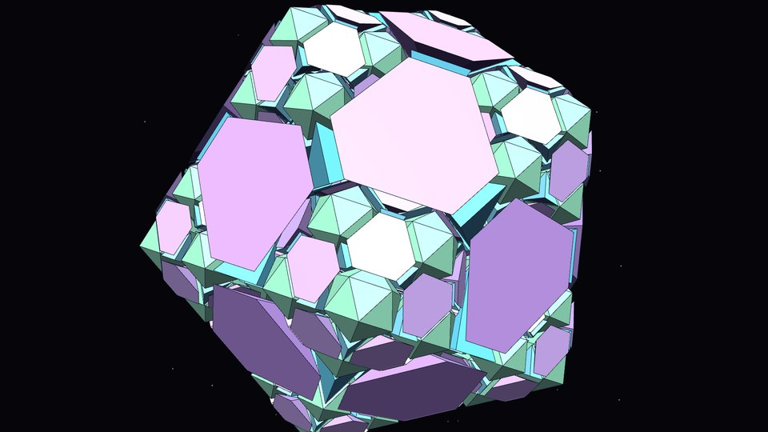
#22 The Chain of Karma DOI 10.5281/zenodo.23310541The regular icosahedron and dodecahedron filled exactly as shells of each other, alternating without end (built and checked to 20,497 pieces). The centres of the Lotus seed's 13 icosahedra match the 600-cell's central vertex and its 12 neighbours, scaled by φ²; and its surface has the C60 fullerene pattern. Only the icosahedron is ever subdivided; the gap pieces occur at every scale.Read paperView in app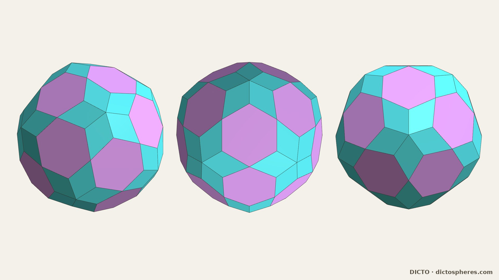
#31 The DICTO OgdoecontahedronThe Spheres of Dharma turned inside out: the polar dual of the Hecatodihedron, a convex solid of 20 regular hexagons and 60 kites, exact in every coordinate. Joined on its hexagons it forms pyrochlore networks and a body-centred cubic packing filling exactly 77.43% of space.Read paperView in app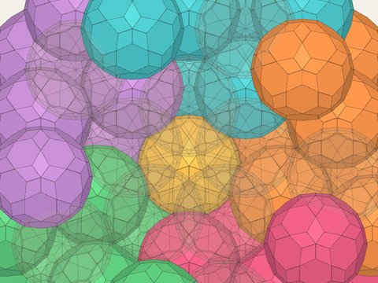
#30 A Fibonacci SpineFive periodic packings of the DICTO Ogdoecontahedron meet round a five-fold axis; with the central copy, the copies removed along the axis are exactly the canonical Fibonacci chain, checked exactly, until minimal removal thins it at height 12.8.Read paperView in app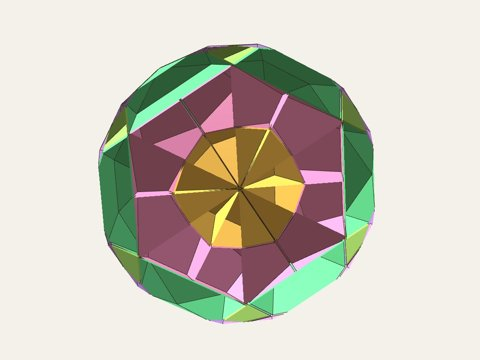
#29 TheaetetusAn icosahedron held exactly by its Cleo-Icos, grown to the DICTO Hecatodihedron in two exact stories: 215 pieces in closed layers, and 102 clean pieces that cut the icosahedron and dodecahedron with the same twenty cones.Read paperView in app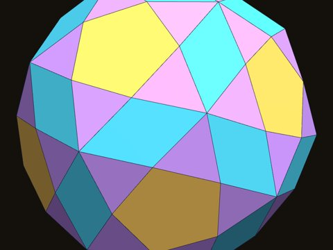
#28 The DICTO Truncated-Icosahedral HecatodihedronA convex solid of 102 faces from the Spheres of Dharma: the truncated icosahedron with a low pyramid on each hexagon, at the height where neighbouring triangles flatten into rhombi.Read paperView in app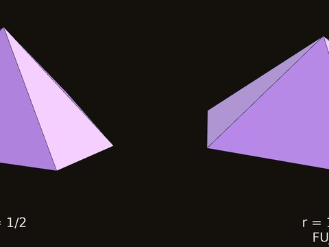
#20 The FUJI FamilyFUJI as one member of a family of pyramids on flat-ended triangles, indexed by the antiprisms. With the golden breathing pyrochlore, the wheel bound, and Cleo-Icos & Antonius, a new space-filling pair from the golden rhombohedron.Read paperView in app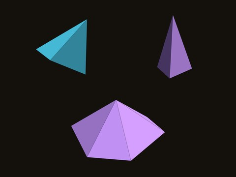
#19 AXE, CLEO and FUJIThe three pieces that close DICTO's thirteen-icosahedron cluster into one icosahedron of edge φ². AXE and CLEO are Mosseri–Sadoc tiles; FUJI is new. With printable nets.Read paperView in app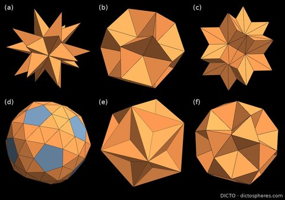
#27 Capturing the In-betweensThe in-between stages of the Chain of Karma, Spheres of Dharma and Bodhi Seed as solids: the great stellated dodecahedron, the excavated dodecahedron, the rhombic hexecontahedron, and a new convex solid, the DICTO Truncated-Icosahedral Hecatodihedron.Read paperView in app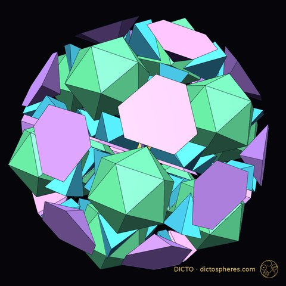
#26 DICTO ATOM-13×13Thirteen clusters of twelve around one, six golden and seven periodic, side by side, with 24 buildable kits.Read paperView in app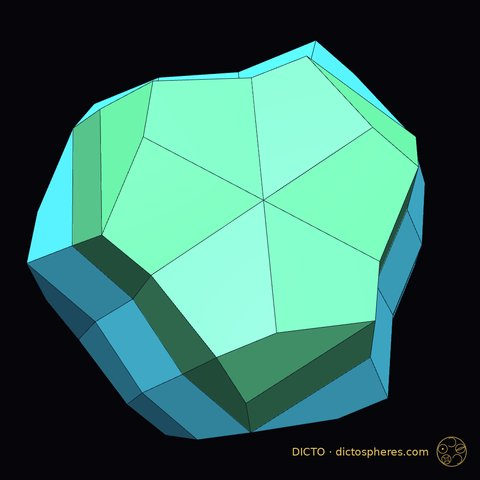
#25 DICTO Spheroid-13 RDA true rhombic dodecahedron wrapped by twelve keyed pieces: a nearly round block of thirteen that fills space by translation alone.Read paperView in app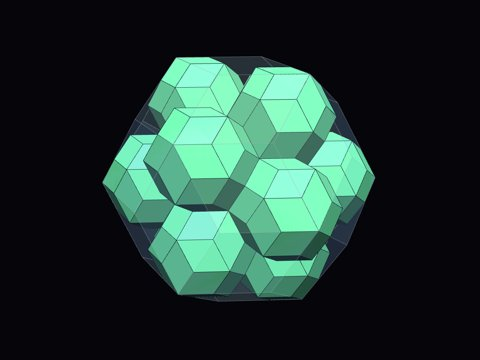
#24 The Bodhi SeedTwelve rhombic triacontahedra and one more inside a triacontahedron φ² times larger; the gap fills exactly with three convex piece types, in two ways.Read paperView in app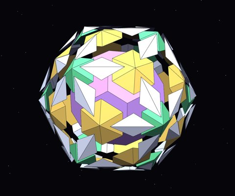
#23 Spheres of DharmaSix icosahedral shells, each filled exactly, repeating every φ³: icosahedron, icosidodecahedron, dodecahedron, fullerene cage, rhombic triacontahedron.Read paperView in app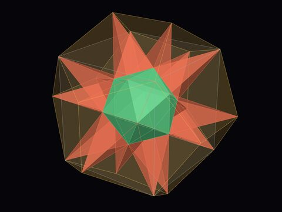
#8 The Euclid–Kepler–Pacioli CellAll five Platonic solids nest on 13 points in one periodic cell.Read paperView in app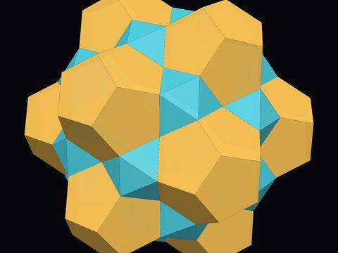
#14 The DICTO-StarAn icosidodecahedron, 12 dodecahedra and 20 tridiminished icosahedra closing exactly.Read paperView in app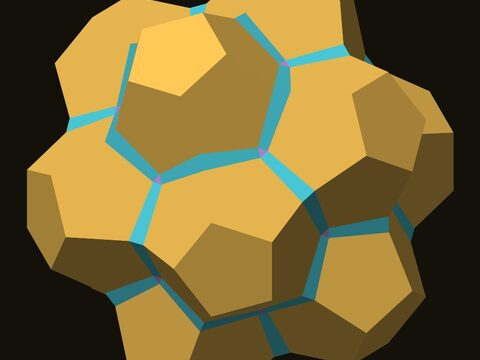
#13 The DICTO Dodeca-13The 13-dodecahedron cluster made solid, with two exact gap pieces.Read paperView in app#17 Kagome HullsSix corner-sharing networks of solid clusters, one rule and its icosahedral exception.Read paperView in app
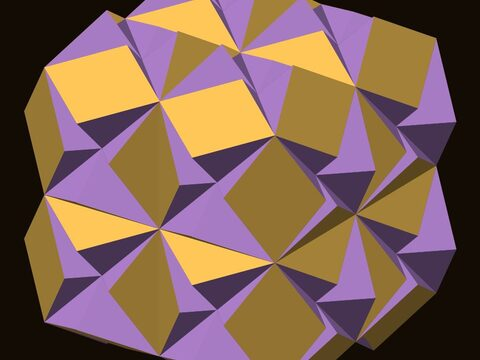
#18 The DICTO HexaA cube of 8 DICTO Hexa Jewels, its Hexa-Key and their 5 : 3 checkerboard.Read paperView in appWhat's new
- 16 Oct 2026 The DICTO Ogdoecontahedron published (#31, DICTO DOI: 10.5281/zenodo.23404688): the Spheres of Dharma turned inside out give a new solid of 20 regular hexagons and 60 kites, the dual of the Hecatodihedron; its hexagon-joined packings form pyrochlore networks.
- 15 Oct 2026 A Fibonacci Spine published (#30, DICTO DOI: 10.5281/zenodo.23396361): five periodic packings of the DICTO Ogdoecontahedron meet round a five-fold axis, and the copies they must give up along the axis form, exactly, the canonical Fibonacci chain, its window set by a five-fold ring clashing with itself. Explore it in Kaleidohedra’s new Golden Bodhi Pyrochlore Networks world: the pyrochlore networks, the five voices and the chorus.
- 15 Oct 2026 Theaetetus published (#29, DICTO DOI: 10.5281/zenodo.23378070): an icosahedron held exactly by its Cleo-Icos, grown to the DICTO Hecatodihedron; a new world in Kaleidohedra.
- 15 Oct 2026 Five papers get their own DOIs: the Euclid–Kepler–Pacioli Cell (#8), the DICTO Dodeca-13 (#13), the DICTO-Star (#14), Kagome Hulls (#17) and the DICTO Hexa (#18).
- 14 Oct 2026 The DICTO Truncated-Icosahedral Hecatodihedron published (#28, DICTO DOI: 10.5281/zenodo.23360858): a convex solid of 102 faces from the Spheres of Dharma.
- 14 Oct 2026 The FUJI Family published (#20, DICTO DOI: 10.5281/zenodo.23357896): pyramids on flat-ended triangles, the antiprism rule, and Cleo-Icos & Antonius, which fill space two to one.
- 14 Oct 2026 AXE, CLEO and FUJI published (#19, 10.5281/zenodo.23351291): the three gap pieces of the Lotus seed; AXE and CLEO are Mosseri–Sadoc tiles, FUJI is new, with printable nets.
- 14 Oct 2026 Capturing the In-betweens published (#27, 10.5281/zenodo.23345502): the in-between stages of DICTO's nested structures pass through the great stellated dodecahedron, the excavated dodecahedron and the rhombic hexecontahedron, and a new convex solid, the DICTO Truncated-Icosahedral Hecatodihedron (102 faces, all tangent to one sphere). With cut-out nets, a new Polyhedraverse group and a build movie in the app.
- 14 Oct 2026 DICTO now has its own DOI, DICTO: Collected Geometric Works, gathering all the papers: 10.5281/zenodo.23345699.
- 13 Oct 2026 DICTO ATOM-13×13 published (#26, 10.5281/zenodo.23333183): thirteen clusters of twelve around one, with 24 buildable kits.
- 13 Oct 2026 DICTO Spheroid-13 RD published (#25, 10.5281/zenodo.23332821): a nearly round, keyed block of thirteen rhombic dodecahedra that fills space by translation.
- 12 Oct 2026 The Chain of Karma published (#22), with its data: 10.5281/zenodo.23310541.
- 12 Oct 2026 The Bodhi Seed published (#24, 10.5281/zenodo.23311353): a rhombic triacontahedron holds 12 smaller ones and one at its centre, the Lotus seed's pattern; its gap fills exactly with three convex piece types, in two ways (checked).
- 12 Oct 2026 Spheres of Dharma published (#23, 10.5281/zenodo.23310833): a second endless golden cycle, icosahedron, icosidodecahedron, dodecahedron, fullerene cage, rhombic triacontahedron, icosahedron, every layer filled exactly (237 pieces per cycle, checked).
- 12 Oct 2026 The icosidodecahedron as the meeting place of the icosahedron and dodecahedron: in their dual compound, their 30 edge pairs cross at its corners (checked). The fullerene cage wraps the dodecahedron at exactly one golden step.
- 11 Oct 2026 The Chain of Karma (#22): the icosahedron and dodecahedron as endless shells of each other, checked to 20,497 pieces; the Lotus seed's surface carries the C60 fullerene pattern; its 13 icosahedra lie on the 600-cell's first shell.
- 11 Oct 2026 The three apps now share one geometry library (krp-core), every shape and lattice in one place.
- 11 Oct 2026 DICTO Icosa, a new world in Kaleidohedra: the Lotus seed, UNITY, the Stella-Corona and the Kepler Star Diadem.
Discoveries
DICTO's findings, each checked exactly in code and archived on Zenodo (10.5281/zenodo.23173809), newest first.
- #16 Sunstar clustersSix dodecahedra round a Dogstar, a Sunstar turned inside out; with four round a corner, an octet network→
- #15 DICTO Jewel clustersFour and six DICTO Jewels, solid, each filling space with stella octangulas; shared, the octet truss→
- #14 DICTO-StarAn icosidodecahedron with 12 dodecahedra and 20 tridiminished icosahedra, closing exactly→
- #13 The 13-dodecahedron cluster made solidIts gaps as two exact pieces, wedges and needles, and separable once built→
- #12 Star Chain ReactionGreat star, Sunstar, great star, Sunstar, nested exactly, each step touching→
- #11 The stretched dodecahedronThe dodecahedron stretched along a cube-face axis: 8 regular pentagons and hexagons→
- #10 DICTO Jewel (EKP windows)12 Penrose rhombus windows; with stella octangulas it fills space→
- #8 Euclid–Kepler–Pacioli cell and networkAll five Platonic solids nested in one cell of a cubic lattice→
- #5 Regular-hexagon elongated dodecahedronFound independently (known: Grünbaum, 2010)→
- #1 DICTO skewed rhombic dodecahedronA space-filler of 60° and 72° rhombi, and its two elongated forms→
Work
- Kaleidohedra by DICTO on ZenodoShearable lattices, new space-fillers and the Euclid–Kepler–Pacioli (EKP) cell · always the latest version→
- RHOMBITUREAn extractable armature system for carving and modelling · doi:10.5281/zenodo.23173896→
- B1NR “Int-aerium & Ext-aerium”Sculpture · Fumin Hall ALTI, Kyoto→
- Design RegistrationDICTO’s registered designs→